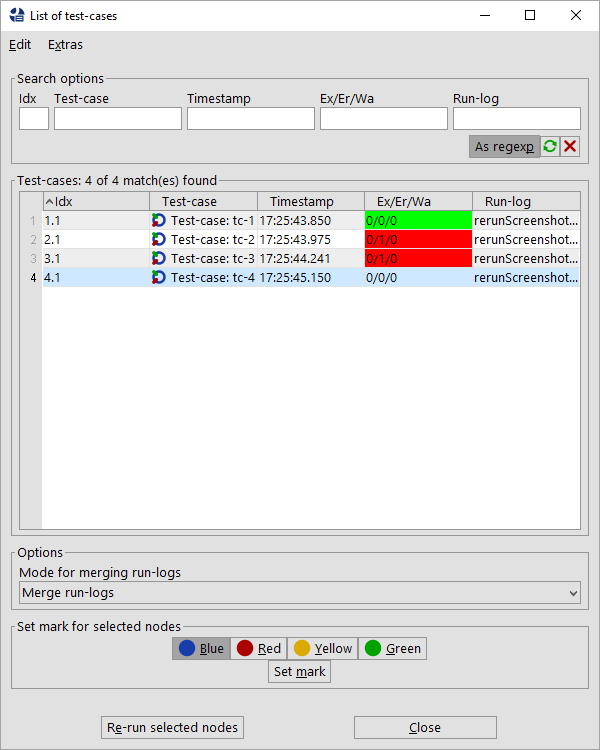

| Version 6.0.3 |
When a test-run has finished, the run-log or report is a good entry point for evaluating the results. In case of errors you may face various challenges. You might want to re-execute the failed test-cases to investigate the reason for the error or because you want to perform an official re-test of this failing situation after removing the error condition. If the re-test results are to be shown in the test-report, you may want to replace the previous results or append them to the existing ones. Or you might just want to repeat the test-case with the previous variable settings and keep the new run-logs and reports separately.
To that end QF-Test offers the capability to trigger re-execution from the run-log.
You can trigger a re-run via selecting the run-log node or any test-set node and choose
»Re-run test-cases« from the »Edit« menu or
from the context menu.
Alternatively you can select the nodes to re-run it the error-list and use the context menu entry
»Re-run test-cases of selected nodes«.
The dialog then shown
lets you select the test-cases for the re-run and choose how to handle run-logs
via the selection box Mode for merging run-logs with the following options:
|
|
|
||||||||||||
|
| Table 22.1: Choices for handling the run-log of a re-run | ||||||||||||
|
|  | ||
|
| Figure 22.1: Dialog to re-run test-cases | ||
For each test-case the variable values are taken from the run-log of the original test-run.
During re-execution the variable ${qftest:isInRerunFromLog} is set to true,
making it possible to distinguish between a normal test-run and a a re-run.
NoteMerging of run-logs makes use of names of test-cases and test-sets. Therefore, those names should be unique. In case of data-driven testing you should take care to keep those names unique via the attributes 'Name for separate run-log' or 'Characteristic variables'.
During your test-automation project you can sometimes face situations where some test-steps don't provide reliable results, failing sometimes but not always. Most of the time such cases depend on timing and can be stabilized using 'Wait for component to appear' nodes, or checks for conditions, delays, scripts or other control structures. As an alternative or additional approach QF-Test offers the capability to repeat such steps whenever they fail.
This automated re-running in case of error can be applied to every executable node using a certain doctag in the 'comment' attribute. This doctag can look like this:
|
|
|
|||
|
| Example 22.18: Example for a re-run definition | |||
In the example above a failed node will be repeated up to three times until an attempt succeeds. Failed
attempts will be downgraded to warning in the run-log. In case all attempts fail the last attempt
will be reported as error or exception. After every failing attempt QF-Test will execute the procedure
handlers.errorhandler.
If you are interested in the number of the current re-run attempt, you can use the variable reruncounter from the qftest variable group, see section 6.5.
The @rerun doctag has parameters like attempts
or errorlevel with possibilities as follows:
EXCEPTION, ERROR or WARNING with = for an exact match or
> or >= for a range.
Specifying errorlevel=ERROR means to re-run that node only in case of an error whereas
errorlevel>=ERROR triggers the re-run in case of errors or exceptions.
If this parameter isn't specified the value errorlevel>=ERROR will be taken as default.
EXCEPTION, ERROR or WARNING with the additional options
NOLOG and KEEP. The level NOLOG stands for removing the
failing results from the run-log entirely. NOLOG should be used with extreme care.
Using the level KEEP doesn't override the original error level and reports it unchanged.
If this parameter isn't specified the value WARNING will be taken as default.
false the current variable values will be used.
true a message will be written into the run-log,
when an attempt begins and when the execution of that sequence terminates. In addition every node
gets an annotation in the run-log with the current attempt.
logmessages are set to true,
all messages will be written to the report as well.
true the first failing attempt will be logged with its
original error level. In case of further failing attempts those errors will be logged with the
newerrorlevel level.
CheckFailedException or just ClientNotConnected for a ClientNotConnectedException.
This parameter should only be used if you set Exception as value for the parameter
errorlevel. Please see the 'Catch' node for details about exceptions.
Exception as error level.
Please see the 'Catch' node for details about exceptions.
true, the value of exceptionmessage is a regular expression.
This parameter should only be used if you set Exception as error level and an
exception message. Please see the 'Catch' node for details about exceptions.
true, the value of exceptionmessage should be the localized exception message, e.g.
mostly the full text. This parameter should only be used if you set Exception as error level
and an exception message. Please see the 'Catch' node for details about exceptions.
| Last update: 9/6/2022 Copyright © 1999-2022 Quality First Software GmbH |